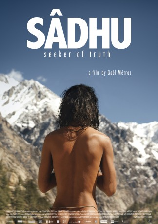

#6142 Sadhu - Auf der Suche nach der Wahrheit
 
 IMDB-Wertung: 6.9 / 10
IMDB-Wertung: 6.9 / 10  Metascore: 0
Metascore: 0 
A Sadhu. A holy man of Hinduism who has renounced all earthly possessions in order to retire to a grotto in the heart of the Himalayas. After eight years of living as a hermit, his meditations no longer satisfy him. In order to redeem his solemn vow, he has to take the risk of confronting the world again. During his pilgrimage Indian mysticism becomes gradually superimposed by the humanity of this wise man. A sage that no longer wants to be one.
Jahr: 2012
Dauer: 112 Minuten
FSK:
Land: Schweiz Studio: Arsenal FilmverleihTonspuren:
Untertitel:
Auflösung: 1080p (1920x816) Größe: 5038 MB
Genre: Musik, Abenteuer, Dokumentation
Regisseur: Gaël Métroz
Drehbuch: Gia Coppola
Soundtrack:
Darsteller:
Datei: X:\Dokumentationen\Dokus(A-Z)\Sadhu - Auf der Suche nach der Wahrheit (2012, FSK, 1920x816).mkv seit 05.05.2017
Festplatte: HD Serien(SU-Z)+Dokus+Musik
 Es gibt insgesamt 34 Filme in der Gruppe 'Dokumentationen\Dokus(A-Z)'
Es gibt insgesamt 34 Filme in der Gruppe 'Dokumentationen\Dokus(A-Z)'